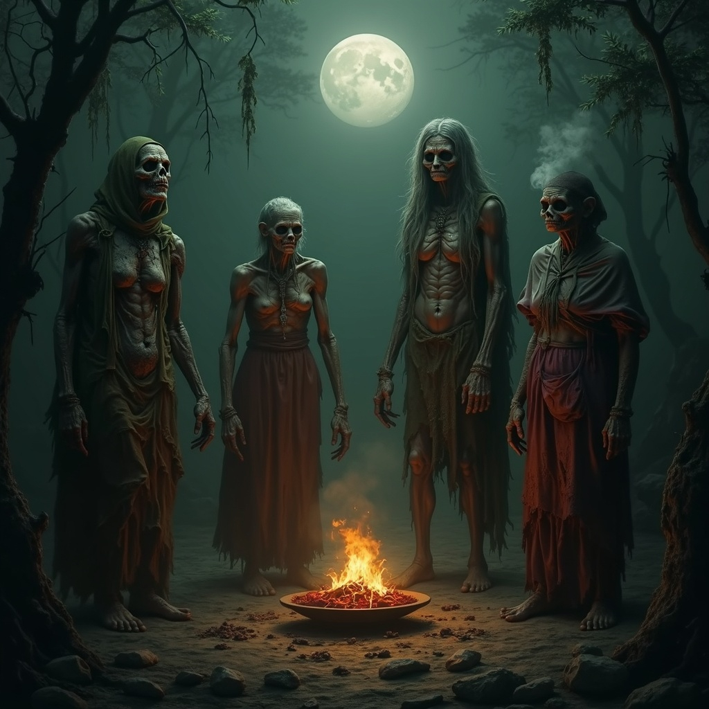

Once celebrated for their beauty and arcane prowess, the Four Hags were powerful witches who sought immortality
at any cost. Their ambition led them to strike a pact with Siluthis, the enigmatic god of decay and entropy.
True to his word, Siluthis granted them eternal life—but at a steep price. Their bodies aged relentlessly, their
once-vibrant forms withering into grotesque reflections of their former selves. Over time, their true names
faded into obscurity, and they became known only as the Hags of Famine, Pestilence, Decay, and Madness.
Embracing their new identities, they cultivated a following of devoted worshippers, elevating themselves to the
status of minor deities within the pantheon of SkazkaWorld.